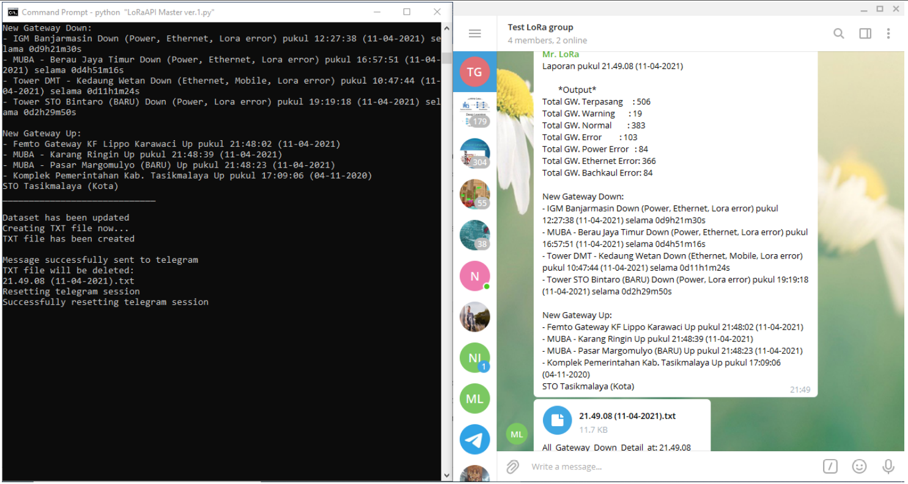
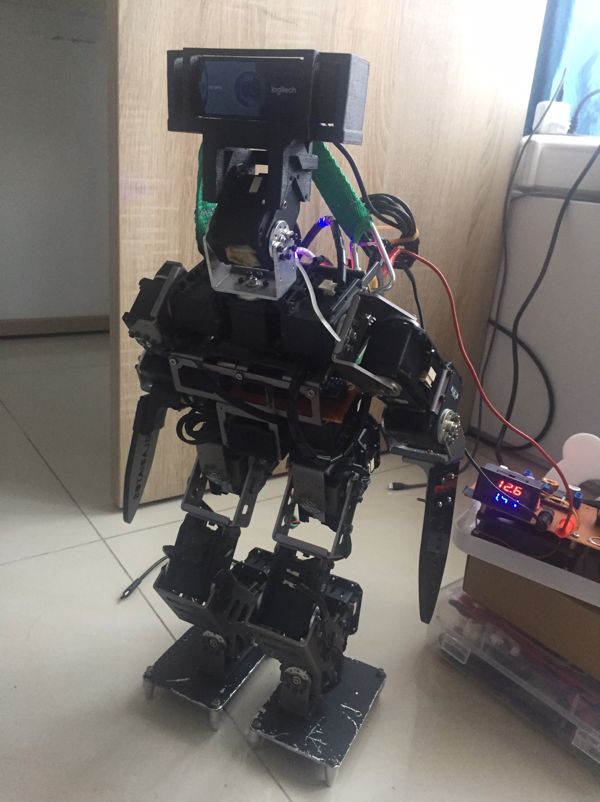
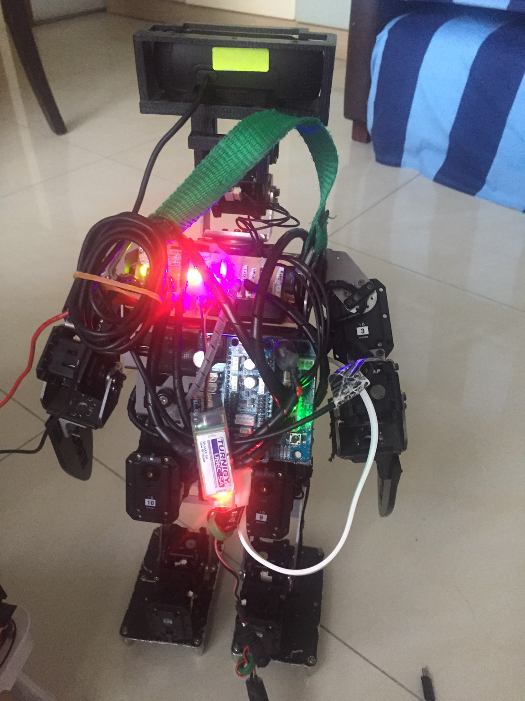
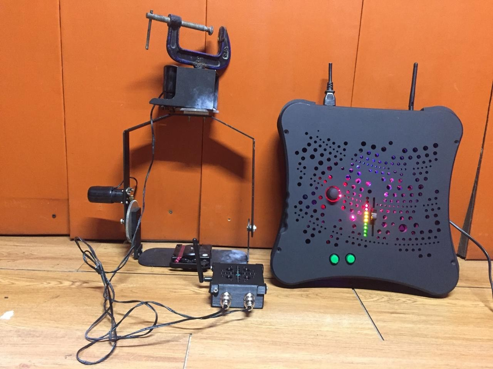
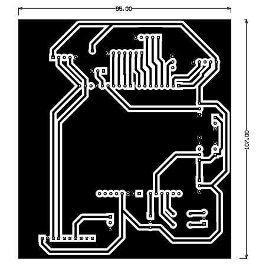
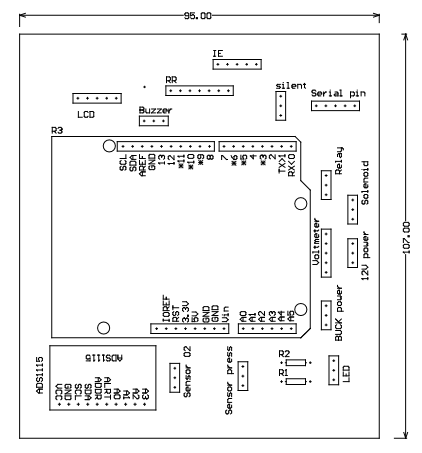
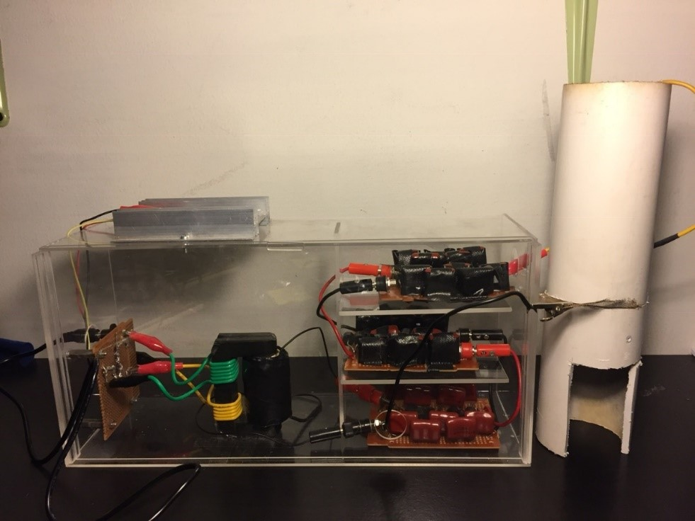

Robotics, AI, and Digital Systems Specialist
Email: krisnakusuma0500@gmail.com | Mobile: +62-813-1977-1165
linkedin.com/in/krisnakusuma05
My name is Anak Agung Krisna Ananda Kusuma. I am a Master's graduate from Seoul National University of Science and Technology, majoring in Electrical and Information Engineering with a specialization in Robotics, AI, and Digital Systems. This portfolio presents my academic and professional experiences throughout my studies and research activities.
As a graduate researcher with more than five years of experience in robotics, I have focused on solving real-world engineering problems and developing technologies with meaningful impact. Through this journey, I have faced challenges that tested not only my technical knowledge and problem-solving abilities, but also my persistence and adaptability. Starting from zero when I was first introduced to robotics at university, I have continuously developed my skills through consistency, hard work, and hands-on research experience.
I believe robotics and intelligent systems play an important role in shaping a better future. I am motivated to continue growing as an engineer and researcher, contributing to the advancement of technology through innovation, collaboration, and lifelong learning.
This project is part of my thesis as well as my second research while I was a research assistant in CIRL lab, Seoultech. In this research, we are focusing on robust control method for imitation learning on quadruped robot. The method is developed using Python and C++ in OCS2 framework and Gazebo simulation. The robot that is used is based on a Unitree Go1 robot with additional bracket to mount extra sensors (Lidar, Depth camera) and compute power (NVIDIA Jetson Orin NX). The robustness of the imitation learning method in this research work is based on the Hamiltonial loss for learning the policy. While most imitation learning method is focused on the behavior cloning loss, in this work, we combine the Hamiltonian loss with the behavior cloning loss to provide a smooth and robust imitation learning control policy, achieving better results compared to using only Hamiltonian loss which resulted in robust but aggressive movement and using only behavior cloning loss which resulted in smooth movement but not robust.
This project is related to my research topic while doing my masters in Control and Intelligent Robotics Lab, Seoul National University of Science and Technology. In this research, we are developing control method for an autonomous racecar. We have implemented reactive, geometrical, and model predictive control method to the car. We also develop our own simulation environment using Gazebo and ROS, and visualize our algorithm using RViz. The workflow of our work consists of implementing the controller algorithm in Gazebo simulation environment and visualize it in RViz. Once the car inside the simulation has achieved satisfactory results in terms of safety and speed, we continue to implement it in the real robot. The robot uses Hokuyo Lidar, IMU, and wheel encoder as the sensor, Jetson Orin NX as the main computing board, and Traxxas chassis for the car body. Operating system that is used is Ubuntu 20.04 and ROS Noetic. Programming language used is C++ and Python.
This is the final project of a course that I took during my second semester of my master's degree. The objective is to create a deep learning model to be implemented in the robot so that the robot can follow the path. For this, I use a convolutional neural network as my model, and built and train it using tensorflow. The datasets are taken based on a python script that I create so that I can just move the robot in the track and the script will automatically take the images based on the keyboard button press w,a,s,d. I assign 4 classes, which are forward, backward, left, and right. In the end, I manage to get around 6000 image in total. Training is done in google collab, and inference is done in the robot. Since the computer in the robot use Jetson Nano, which is not compatible with tensorflow, I need to convert the tensorflow model to tensorflow lite model. In the end, the robot ables to follow the track very reliably, and from this course, I learned that the most important aspect in training a model is to provide a clean dataset so that the network can work reliably.
This is a personal project that I have done since the beginning of 2020. It acts like a learning ground for me to satisfy my curiosity in creating a robot from scratch. Not only that, it also allows me to apply the knowledge that I gain from the university to real life problems. This robot is driven with 4 motors that is connected to a mechanum wheels. Those wheels are driven by STM32 microcontroller which also monitor the wheel encoder of the motor. There are other microcontrollers that is inside the robot, which are the Arduino pro micro and pro mini to drive the LEDs, interacting with the LCD display, running the servo motor, reading the GPS sensor, compass sensor, 6 DOF IMU sensor, thermal camera, and the input from a USB device such as a USB keyboard for manual control of the robot. Those microcontrollers are connected throguh a serial communication with each other so that all microcontrollers can exchange data. The brain of the robot consists of 2 Single Board Computers (SBC), which are the RaspberryPi Zero ver.2 and Lattepanda. These SBCs will work with the monocular camera attached to the servo motor as the main input of the robot to sense the environment. Even though it is still far from finish, I hope that as time passes, I can learn the robotic development process from the ground up and apply the knowledge that I get later on when I work as a robotic engineer.
During my first semester in Germany, I need to be a part of a project to complete my study. For this, I applied to the project called Projektarbeit QR-Code (Project work QR-Code) and got accepted. On this project, me and my one colleague were asked to develop a windows application that is able to work with two functionalities, which are taking an excel file as an input that consist of students data and output an answer sheets for each of the students in the form of Microsoft word file and taking an image file of the scanned answer sheet and output an excel file that consist of the students data from the scanned answer sheets. The way this work is that we create a windows application that creates a QR code based on the student data and place it in the specified location of the generated answer sheet. Since QR-Code is basically a medium to store a few number of characters, we can use it as a medium to exchange data from digital world to physical world and vice versa. When the answer sheet is to be read, the scanned answer sheet is then taken as input so that the decoding of the QR code can be executed. By this, we have a system that is able to generate an answer sheet for the students to fill in and read the answer sheet to know which answer sheet belongs to. This project is at the end going to be combined with the other project, which are the student answer recognition system for multiple choice test answer sheet.
During my time taking the Fresh Graduate Academy of Digital Talent Scholarship from the Ministry of Communication and Information Technology, Indonesia, the last project is to develop a model that can classify image datasets from kaggle. It is a group of two person and we are free to choose any dataset that suites our interest. We found environment image classification interesting and decided to use it for our final project. We create a convolutional neural network for our model using tensorfow. For the image to classify better in unknown input space, we perform data augmentation to the dataset such as flip, rotate, and zoom the image. Although the validation accuracy is not satisfactory yet, which are above 95 percent, We can see an increasing trend for the accuracy and decreasing trend for the loss, which means the model we created are learning correctly. We believe by tuning the size of the network and give more epochs to train, our model are able to classify the images correctly.

As for a prerequisite to continue my study of dual-degree program for Universitas Indonesia - Universität Duisburg-Essen, I need to have an internship for at least 13 weeks. For this, I was working at Telkom Indonesia in the Department Digital and Next Business. There, I work closely to the monitoring of the LoRa Gateway that Telkom Indonesia has. Due to inefficient reporting method that exist, I propose an automatic system for reporting the LoRa Gateway status. A more familiar term for The system that is created for automizing the manual work done by humans based on digital workers is called Robotic Process Automation (RPA). Since the LoRa Gateway reporting task is repetitive, the development of RPA for the task is possible. I use python and requests library to get all the data about the gateways from the available API and process the data so that it can output the desired result according to the existed reporting format. At the end, I am able to create a bot that is able to do the LoRa gateway reporting faster and more reliable and can work 24/7.
As to continuing the work of my team, on November 2020, I also got selected to become the team leader of the team. During my tenure, we agreed to develop the old robot that have not been touched for quite some time since it is made of a better hardware than the robot ver.1. Because for this year the task of the robot is to run 8 meter across a field and then go back while also rotate the pole, we decided to use line following method for this task, since there exist a line from the start position to the pole at 8 meter mark. During the development, there exist many problems such as bad computer vision algorithm and unstable movement of the robot. By using trial and error method for the masking of the camera pixel input and determine the position of the line in respect to the camera of the robot, we have successfully create a simple intelligence than can make the robot decide whether it should go forward, right, or left. For the unstable movement of the robot, by taking reference of human movement and the concept of Center of Gravity (CoG), we have successfully create a stable movement for the robot to go straight, turn right, and turn left. In the end, we have create a bipedal robot that can follow a line and travel 16 meters.


This is the most interesting projects that I have been in so far. On September 2019 I was a member of a robotic club at my university, with a specialization in humanoid robots. I become the head of electrical division, which is responsible for the power supplied to the robot, the movement of the robot, and the communication between the mini computer to the microcontroller that drives the motion of the robot. The hardware used in this robot is Dynamixel servo which support daisy chain, OpenCM9.04 as the brain used to drive the motion of the robot, RaspberryPi as the brain of the vision to make the robot able to make decision of what should it perform according to the video processed by the openCV library inside the RaspberryPi mini computer, and the C920 logitech webcam to take the video. The main task of this robot is to play soccer, which will be competing on a national competition held by the ministry of education and culture, Republic of Indonesia.

This project is done during the same period as the Ceiling dolly project. We were trusted to make a custom revolution head to be used in the studio. The difference between the ceiling dolly and the revolution head is that the revolution head is static and it can only give a 180° sight to the stage. The control system of this device is the same as the ceiling dolly. It uses the NRF24L01 RF module for the communication between two microcontrollers. The only difference is the microcontroller and the input device that is used. We use the Arduino Uno and the Arduino nano for the transmitter and the receiver, respectively. The input for this device is a joystick to drive the revolution head around the pitch and yaw axis, a potentiometer to control the speed, and two buttons to change the direction according to the respective operator sight.
This project is one of the biggest projects I have done so far. I was hired as an electrical engineer in a studio to make a custom ceiling dolly. We consist of a group of four students from the same university, which has various background. Me and one of my friends do the control system of the ceiling dolly. The purpose of this device is to give a recording camera a 360° sight for it to be able to capture all the events happening in the studio stage. We use the Arduino mega Pro as the brain of our system, which will drive the train that carries the camera. For the ease of the controlling system, we use the NRF24L01 wireless RF module to communicate with the Arduino mega pro. For this, we need to have another controller that makes the communication possible. Arduino nano is the perfect candidate because of the relatively small size. It will process the input coming from the operator at the ground and then send it using the NRF24L01 module to the Arduino mega pro, which will then interpret the input to give the desired output. The input of this device is a joystick to drive the ceiling dolly arm (consist of 2 motor) in the roll and yaw axes direction, two buttons to drive the train backward and forward, 3 potentiometers to control the speed of the 3 motor.


This is a university project which is intended to provide an emergency ventilator which is highly needed for covid patients during the global pandemic 2020. I work as the printed circuit board (PCB) designer and production in the development team. For this reason, I use the software Altium designer to fulfil my duty. First, I gather all the connections of the circuit, and then verify it to the team leader whether the connection is right or wrong. I also asked about the pin configuration that I can use to simplify the wiring later on. Because this is the development part, I use a traditional etching method to produce my PCB. first, I print the circuit that I have made from Altium designer into a piece of photo paper. Then, by using heat from the laminating machine, I stick the printed circuit into a piece of copper board. Next, I soak the copper board into a bucket of FeCl solution. This is used to remove unwanted copper in our PCB. After that, I clean it with running water from the FeCl solution. Finally, the PCB is then completed. This ventilator will finally be distributed across the archipelago to give a covid patients a better chance to survive.
Plantation Field Analyzer (or PFA for short) is a plantation field monitoring system which is used to increase the productivity of a plantation field. This system consists of two subsystems, which are aerial monitoring system and ground monitoring system. For aerial monitoring system, we use a drone which is controlled by a raspberryPi mini computer to take images of the plantation field from above. This image is then processed with library called OpenCV to generate the difference in color, which then can be used to tell whether something bad happened to the plantation field. For ground monitoring system, we use the ESP32 microcontroller which has a built-in wifi to send the data to the monitoring laptop. It provides the soil moisture data and the air and humidity temperature data of the ground. After we have succeeded to get those 2 types of data (from aerial monitoring system and ground monitoring system), we then compare it to achieve a conclusion about the status of the plantation field. Because of this innovation, we have won a technological development competition that is held in Universitas Udayana, Bali.

Electrostatic precipitator is the first project that I have indulged in. I was in charged for the electrical circuit design and assembly, including the selection of components used. This is a project that is done in team with one supervisor, which in result giving an output of a patent. The use of this device is to purify dirty air by a principle of electrostatic. This principle is commonly used in coal powerplant, where it produces very small particle byproduct which is very dangerous to human health. The way to solve this problem is to trap the small particle (usually in range of micrometer) in the first place. This project is the device used in the powerplant, only on a smaller scale. First, a 9V input of an adapter is fed on a simple inverter, where the output will be connected to a transformer. This will increase the voltage up to 1kV. In order for this air purifier method to work efficiently, it needs to have an output voltage of above 20kV. To get such high voltage, we use the voltage multiplier circuit, where it consists of 15 stages which will increase the output voltage into 30kV DC. As a result, this method of electrostatic precipitator can trap molecule diffused in air. We test for several object where it can produce smoke, simulating the dirty air, which are cigarette and an incense stick. It can be seen from the result that it can trap small particles produced by the two.